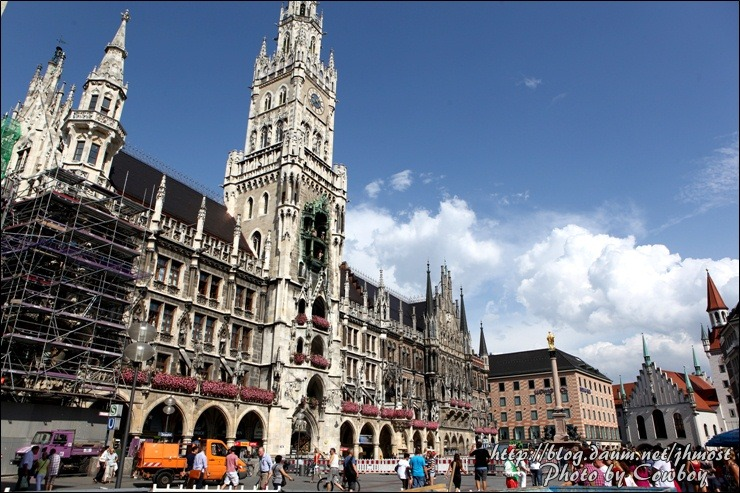

1. 베를린 장벽1961년 동독 정부가 인민군을 동원하여 동베를린과 서방3개국의 분할점령 지역인 서베를린 경계에 쌓은 콘크리트 담장이다. 독일 통일의 상징물이다. |
2. 쾰른 대성당쾰른 대성당은 독일 쾰른에 있는 로마 가톨릭교회의 성당이다. 고딕 양식으로 지어졌다. 쾰른 대교구의 주교좌 성당이라 쾰른 주교좌 성당이라고도 불린다. |
|---|---|
3. 하이델베르크 성하이델베르크 성은 독일의 유명한 유적이고 하이델베르크의 랜드마크이다. 독일 남서부 바덴뷔르템베르크주에 있는 도시 하이델베르크에 위치하고 있다. |
4. 노이슈반슈타인성그의 부왕이었던 막시밀리안 2세는 '백조의 성'이라 불리던 폐성 호엔슈방가우 성을 사들여 고딕 양식으로 개조, 재건축하였고, 바이에른 왕 루트비히 2세가 이곳에서 자랐다. |
5. 브란덴부르크 문브란덴부르크 문은 초기 고전주의적인 양식의 개선문으로 독일의 수도 베를린에 있다. |
6. 국가의회 의사당신르네상스 양식의 의회 건물 꼭대기에는 노먼 포스터의 유리 돔이 있으며 360도 도시 전망을 볼 수 있습니다.  |
7. 마리엔 광장우뚝 솟은 성 베드로 교회, 2개의 시청사, 장난감 박물관이 있는 시내 중심 광장 및 교통 중심지이다. 
|
8. 베를린 돔베를린 돔은 독일 베를린에 있는 독일 개신교 교회이다. 베를린 미테지구의 동쪽에 자리잡고 있으며, 슈프레섬의 북쪽인 박물관 섬의 랜드마크이다. 독일 내에서 가장 큰 규모의 개신교 교회 건물이다. |